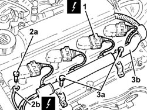
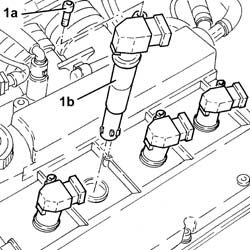
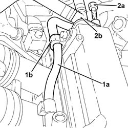
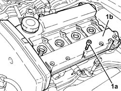
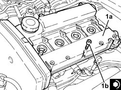
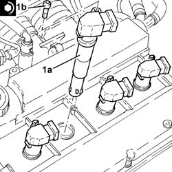

1016A20 SINGLE CAM COVER - R + R AND REPLACE GASKET
- Path
- Procedures > 10 ENGINE UNIT > 1016 CYLINDER HEAD/S > 1016A CAM COVERS > 1016A20 SINGLE CAM COVER - R + R AND REPLACE GASKET
- Kind
- repair procedure (removal / refitting; the operation number is the code)
- Applies to
- engines: 1.8 T.SPARK, 2.0 JTS; all production periods
- Interactive page
- https://sloeber94.github.io/elrnDB-aGt/en/#/125000891
Applies to: engines: 2.0 JTS; all production periods
 Removing
Removing
 Refitting
RefittingEnsure that the ignition key is in the OFF position, then disconnect the negative battery terminal (-).
Name | Connector | |
|---|---|---|
- | Battery | See A1B BATTERY ( BATTERY NEGATIVE ) |
Proceed with removal
Op. 1016A40 IGNITION COIL COVER ON CYLINDER HEAD- R+R.
1. Disconnect the electrical connections from the ignition coils.
Name | Connector | |
|---|---|---|
1 | Ignition coil | See A30 IGNITION 'COIL |
2. Undo nut (2a) and disconnect earth lead (2b) from the cam cover.
Name | Connector | |
|---|---|---|
2b | Earth on engine | See C40 ENGINE EARTH |
3. Undo the bolts (3a) and move wiring duct (3b) aside.

Applies to: engines: 2.0 JTS; all production periods
1. Undo the bolts (1a) and remove the ignition coil (1b).

Applies to: engines: 2.0 JTS; all production periods
1. Release the fuel vapour supply pipe to the high-pressure fuel pump (1a) from the band (1b) on the tappet cover.
2. Undo the bolt (2a) and disconnect the connector (2b) for the vapour recovery pipes from the tappet cover.

Applies to: engines: 2.0 JTS; all production periods
1. Undo the bolts (1a) and remove the tappet cover (1b), complete with seal.

Applies to: engines: 2.0 JTS; all production periods
Refitting
Removing1. Refit the cam cover (1a), complete with a new gasket and secure it by tightening the bolts (1b) to the recommended torque.
 | Fastening | Component | Ø | Value (daNm) |
|---|---|---|---|---|
1b | Bolt | CAM COVER | M6 | (Cylinder head side) 0.8 ÷ 1.0 |

Applies to: engines: 2.0 JTS; all production periods
Connect the vapour recovery pipe connector to the tappet cover and tighten the relevant bolt.
Secure the fuel supply pipe to the high-pressure pump to the band on the tappet cover.
1. Place the ignition coils (1a) back in their housings and secure them by tightening bolts (1b) to the recommended torque.
| Fastening | Component | Ø | Value (daNm) |
|---|---|---|---|---|
1b | Bolt | IGNITION COIL/REEL | M6 | (Tappet cover side) 0.8 ÷ 1.0 |

Applies to: engines: 2.0 JTS; all production periods
Refit the wiring duct and secure with bolts.
Connect the earth lead to the tappet cover and secure it with its bolt.
Connect the electrical connections to the ignition coils.
Proceed with refitting
Op. 1016A40 IGNITION COIL COVER ON CYLINDER HEAD- R+R.
Connect the negative (-) battery terminal.
Applies to: engines: 1.8 T.SPARK; all production periods
Removing
RefittingProceed with the removal
Op. 1016A40 IGNITION COIL COVER ON CYLINDER HEAD- R+R
.
Proceed with the removal
Op. 5510C14 IGNITION COIL/S - R+R
.
1. Disconnect the oil vapour recirculation pipes from the single tappet cover.

Applies to: engines: 1.8 T.SPARK; all production periods
1. Undo the bolts (1a) and remove the single tappet cover (1b) complete with gasket.

Applies to: engines: 1.8 T.SPARK; all production periods
Refitting
RemovingPlace the single tappet cover, complete with a new gasket, back in its housing and secure it by tightening the bolts to the recommended torque.
Fastening | Component | Ø | Value (daNm) | |
|---|---|---|---|---|
- | Bolt | CAM COVER | M6 | (Cylinder head side) 0.8 ÷ 1.0 |
Connect the oil vapour recirculation pipes to the single appet cover.
Proceed with the refitting
Op. 5510C14 IGNITION COIL/S - R+R
.
Proceed with the refitting
Op. 1016A40 IGNITION COIL COVER ON CYLINDER HEAD- R+R
.
Topics linked from this page (1)
Topics that link to this page (13)
- 1008C18 LINK MOUNT ON ENGINE - R R
- 1016C10 SINGLE CYLINDER HEAD, REMOVED - OVERHAUL
- 1020D15 FRONT CRANKSHAFT OIL SEAL COVER-R+R AND REPLACE SEALS FOR ENGINES WITH OIL PUMP ON CRANKSHAFT AND HEAT EXCHANGER
- 1020D18 FRONT CRANK SHAFT COVER OIL SEAL - REPLACE
- 1028H10 PISTON WITH CONNECTING ROD - R R
- 1032B10 TOOTHED TIMING BELT - R + R FOR TIMING ADJUSTMENT OR REPLACEMENT
- 1032B46 TOOTHED DRIVE PULLEY - R + R
- 1032B52 TOOTHED DRIVEN PULLEY (ONE) - R + R
- 1032C18 MOBILE TIMING SYSTEM TENSIONER - R + R FOR 24 VALVE ENGINES
- 1032C32 FIXED TIMING SYSTEM TENSIONER (ONE) R + R
- 1036C10 CAMSHAFT IN CYLINDER HEAD - R R ON VEHICLE
- 1056B51 CAM ANGLE SENSOR R + R
- 1088C10 WATER PUMP - R + R